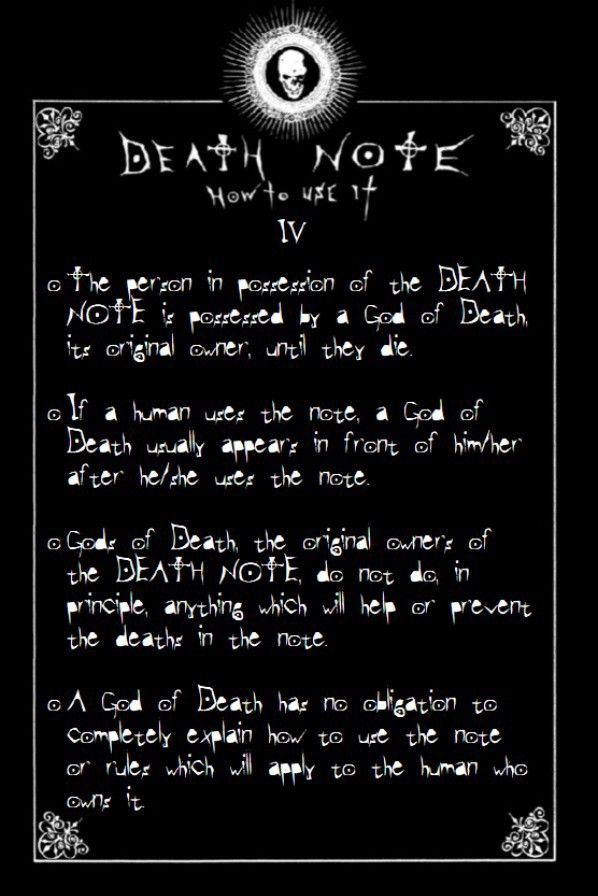
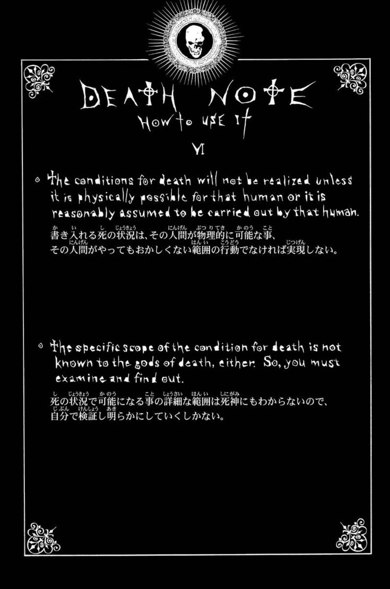

Death Note is a modern classic that masterfully blends elements of psychological suspense, supernatural mystery, and ethical philosophy into one riveting narrative.
It captivates its audience with an ingenious premise centered on an extraordinary notebook that grants its possessor an unsettling measure of power.
something
This power, while tempting, forces characters—and through them, the readers—to confront profound questions about justice, responsibility, and the gray areas that exist between right and wrong.
something
Created by the celebrated duo Tsugumi Ohba and Takeshi Obata, "Death Note" advances far beyond typical storytelling. It builds a world where every decision carries monumental consequences and the line between morality and malevolence is continually blurred.
something
The narrative’s richly layered structure challenges audiences not just to follow a plot but to engage in a cerebral dialogue about the price of absolute power and the nature of true justice. Its pacing and character development ensure that each twist and turn is a calculated move in an intricate game of wits and ideologies.
something
The series is notable for its artful presentation. Every panel and carefully chosen word contributes to a moody atmosphere that mirrors the internal battles waged by its characters.
something
Rather than relying solely on overt action, "Death Note" weaves tension through subtle cues, moral dilemmas, and psychological interplay. This approach not only draws viewers and readers into the story but also leaves them pondering long after the final page is turned—a testament to its deeply resonant themes.
something
At its core, "Death Note" is an invitation to explore the complexities of human nature and the impact of making choices that defy conventional norms.
something
It asks us to reflect on our own understanding of ethics, encouraging us to question what we might do if given unprecedented power over life and death. In doing so, it becomes much more than a supernatural thriller—it evolves into a mirror, reflecting our innermost fears and aspirations as we navigate the labyrinth of morality.
something
For anyone intrigued by stories that pulse with intellectual tension and that challenge our perceptions of justice and consequence, "Death Note" offers a journey that is both thought-provoking and deeply immersive. Its layered storytelling, striking visuals, and timeless ethical inquiries ensure that it remains a compelling experience, inviting each audience member to ponder where the true balance between right and wrong lies.